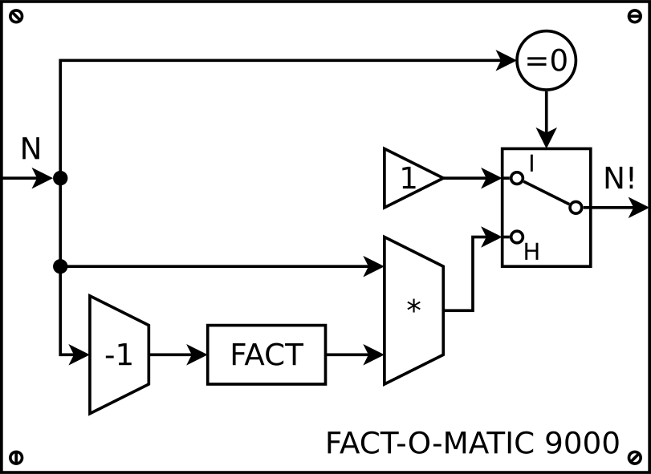

Keresés táblázatban – kérdéseink
- Szerepel-e egy konkrét elem?
- Hol van az első ilyen elem?
- Egy bizonyos tulajdonságú elem
- Ezt a keresés kulcsának nevezzük
Generikus algoritmusok
- A keresések ugyanúgy működnek:
- Akármilyen típusú az adat (szám, sztring, ember, ...)
- Akármilyen tulajdonság (adott értékű elem, páros elem, „a” betűvel kezdődő, 170–180 centi magas)
- A következő példák
double[]-ben keresnek adott elemet
bool van_e(double *szamok, int meret, double keresett) {
bool van_talalat = false;
int i = 0;
while (i < meret && !van_talalat) {
if (szamok[i] == keresett)
van_talalat = true;
++i;
}
return van_talalat; /* miért állt meg a ciklus? */
}- „Van-e?” – elég egy olyat találni, és megállhat a ciklus
- Ha egyet sem találtunk, akkor hamis érték marad a változóban
A van-e függvényt egyéb formákban is lekódolhatjuk. Ezek mind ugyanolyan jól működnek, mint a fenti változat.
A keresést megszakítva
int i;
for (i = 0; i < meret; ++i)
if (szamok[i] == keresett)
break;
return i < meret;Így is lehetne. Megszakítjuk a kereső ciklust, ha megtaláltuk az elemet.
Utána kell egy feltétel, ami igazra értékelődik ki, ha megtaláltuk az elemet
– ehhez figyelni kell azt, hogy az i<meret miatt állt meg.
A függvényből azonnal visszatérve
for (int i = 0; i < meret; ++i)
if (szamok[i] == keresett)
return true;
return false;Mivel a C-ben szabad a függvény belsejében is visszatérni, egy találat esetén azonnal visszatérünk igaz válasszal a „van-e” kérdésre.
int hol_van(double *szamok, int meret, double mit) {
for (int i = 0; i < meret; ++i)
if (szamok[i] == mit)
return i;
return -1;
}- A függvény a megtalált elem indexével tér vissza
- Ha nincs meg, akkor
-1-gyel (vagymeret-tel is lehetne) - Egyik sem lehet index, így megkülönböztethető
A nincs találatra a -1-et és a tömb méretét is elterjedten használják. Mindkettő a tömb indexeinek tartományán kívül esik (mivel az 0...meret-1), ezért mindkettő egyformán jó lehet. A -1 előnye, hogy szembetűnőbb; a méret előnye, hogy nem negatív szám (mivel a tömb mérete amúgy sem lehet negatív, így elvileg a méreteket, indexeket tárolhatnánk előjel nélküli változókban is).
A találatra mutató pointerrel visszatérő változat:
double *keres(double *szamok, int meret, double mit) {
for (int i = 0; i < meret; ++i)
if (szamok[i] == mit)
return szamok+i; // &szamok[i]
return NULL;
}A függvény a megtalált elem pointerével tér vissza,
ha nincs, akkor NULL pointerrel. Ehhez hasonlóan viselkednek a
könyvtári strchr(), strstr() stb. függvények.
Pointer aritmetikát használó változat:
double *keres(double *szamok, int meret, double mit) {
for (double *it = szamok; it != szamok+meret; ++it) {
if (*it == mit)
return it;
}
return NULL;
}Ebben a pointert a tömb elejére állítjuk: it=szamok.
Utána addig megyünk, amíg nem az utolsó utáni: it!=szamok+meret.
Itt *it a pointer által mutatott, a vizsgált érték,
a ++it kifejezés pedig a következő elemre lépteti a pointert.
Ha rendezett a tömb...
Nem csak == és != van, hanem a < és a > is hasznos információ!
==: Ezt keressük!<: Valahol előrébb kell legyen.>: Hátrébb kell legyen.
int binkeres(double *t, int db, double mit) {
int min = 0;
int max = db-1; // határok
int kozep = (min+max)/2;
while (min <= max && t[kozep] != mit) {
if (t[kozep] < mit)
min = kozep+1; // középtől jobbra
else
max = kozep-1; // középtől balra
kozep = (min+max)/2;
}
/* miért állt meg a ciklus? megtaláltuk vagy nem? */
return min <= max ? kozep : -1;
}A bináris keresés minden lépésben megfelezi a vizsgálandó
tömbtartományt. A működésének lényege: megvizsgálja a középső tömbelemet.
Ha az rögtön az, amit keresett, akkor vissza is tér vele. Ha nem, akkor
a kisebb-nagyobb relációtól függően tudja folytatni a vizsgálatot. Ha
a keresett elem kisebb, mint a rendezett tömb középső eleme, akkor valahol
tőle balra kell keresni az elemet; ha nagyobb, akkor pedig valahol tőle
jobbra. Ezért a min és a max változók (amely
az épp vizsgált tartomány alsó és felső határát mutatják) ettől
függően beállíthatók a középsőtől balra vagy jobbra lévő elemre.
Mindezt
addig kell folytatni, amíg meg nem találjuk a keresett elemet, vagy a vizsgálandó
tartomány nulla méretűvé nem zsugorodik. (Mivel a min-t és a
max-ot mindig a középsőtől eggyel arrébb állítjuk, a tartomány
eltűnését a min>max miatt vehetjük észre.) A ciklusnak itt
is összetett feltétele van, a befejeződése után ezért meg kell vizsgálni, miért
állt meg.
| hatékonyság | örülünk-e |
|---|---|
| Θ(1), konstans | 
|
| Θ(log n), logaritmikus | 
|
| Θ(n), lineáris | 
|
| Θ(n2), négyzetes | 
|
| Θ(en), exponenciális | 
|
Lineáris keresés: Θ(n)
- Lehet, hogy egyből megtaláljuk, lehet, hogy a végén lesz
- Átlagosan a felét kell végignézni
- A keresési idő egyenesen arányos a tömb méretével
Bináris keresés: Θ(log2n)
- Minden lépésben felezzük az intervallumot
- A keresési idő ~ log2méret. 1 millió → 20 lépés!
Algoritmusok hatékonysága általában
Az Θ(n) jelöléssel szoktuk jellemezni egy algoritmus gyorsaságát. A jelölésben az n a bemenet hosszát, a bemeneti adatok számát jelenti. Θ(n) azt jelenti, hogy a lépésszám nagyjából lineárisan, Θ(n2) pedig, hogy nagyjából négyzetesen függ a bemeneti adatok számától.
szerepelt
Egy algoritmus lépésszáma annak vizsgálatával becsülhető, esetleg pontosan meg is határozható. Az így kapott függvénynél csak a leggyorsabban végtelenhez tartó tagot vesszük figyelembe, mert nagy bemenet esetén az a döntő. Az n2 gyorsabban tart a végtelenhez („bikább”), mint az n, mivel bármilyen nagy konstans szorzó, pl. 10000n esetén is lehet olyan n-et találni, amelyre n2>10000n. Az exponenciális függvény tart leggyorsabban a végtelenhez, míg a logaritmus függvény értéke pedig mindegyik közül a leglassabban.
Emiatt részesítjük előnyben az olyan algoritmusokat, amelyek Θ(1), Θ(log n) vagy Θ(n) időben futnak. Az Θ(n2) nagy n-ek esetén már lassú lehet; Θ(en) pedig valószínűleg lassú már kis n-ek esetén is. Éppen erre épülnek a titkosítások: ha jó az algoritmus, akkor a megfejtés csak próbálkozásra épülhet – ami viszont viszonylag kis kulcs esetén is beláthatatlanul hosszú ideig tart. (Titkosítás: ha a jelszó (titkosítás kulcsa) 128 bites, a végigpróbálandó lehetőségek száma: 2128=340282366920938463463374607431768211456 darab.)
Rendezett tömb
- Növekvő sorrend: a szomszédos elemekre
t[i] <= t[i+1] - Tranzitív tulajdonság: ha A≤B és B≤C, akkor A≤C
A rendezések működése
- Nincs segédtömb, a meglévő tömbben dolgozunk
- Megengedett lépések: két elem összehasonlítása és cseréje
- Genericitás: az algoritmusok általánosak (sorrend, típus)
- „Oszd meg és uralkodj” elv: divide and conquer (latinul: divide et impera)
- A rendezett részt növeljük, amíg el nem fogy a rendezetlen rész
Lényege: egymás melletti elemek összehasonlítása és cseréje.
Egy sor csere által a legnagyobb elem a végére kerül.
A buborékrendezés egymás melletti elemeket hasonlít össze. Lépései:
- Hasonlítsuk össze az első két elemet. Ha nincsenek jó sorrendben, cseréljük meg.
- Hasonlítsuk össze a második párt (második és harmadik elem). Esetleg csere.
- Folytassuk így a tömb végéig.
- A legnagyobb elem ezáltal a tömb végére kerül, még akkor is, ha legelöl volt. Az már a végleges helye.
- Csináljuk meg ugyanezt még egyszer, a tömb elejétől az utolsó előttiig. Az utolsóhoz már nem kell nyúlni, hiszen az a legnagyobb.
- Aztán ugyanezt megint, de az utolsó kettőhöz már nem nyúlunk stb.
Futás közben így a tömb két részre oszlik: egy már rendezett és egy még rendezetlen részletre. A rendezetlen részlet egyre csökken; azon belül kell összehasonlítani és esetleg cserélni a párokat. Ezért az algoritmus két ciklust tartalmaz. A külső ciklus az egyre kisebb rendezetlen részt határozza meg; a belsejében lévő pedig az egymás melletti párok összehasonlítását vezérli.
void buborek(double *t, int db) {
/* egyre rövidebb tömbrészletek ciklusa */
for (int i = db-1; i > 0; --i) {
/* egymás utáni párok ciklusa */
for (int j = 0; j < i; ++j) {
if (t[j] > t[j+1]) {
double temp = t[j];
t[j] = t[j+1];
t[j+1] = temp;
}
}
}
}Javított buborékrendezés (improved bubble sort)
Figyeli, hogy egy fésülés során volt-e csere. Ha nem, leállítható.
Azért lehet ezt megtenni, mert a fésülések közben mindig ugyanazt a listarészletet vizsgáljuk, vagyis mindig annak egy egyre rövidebb darabját. Ha az egészet végignézve nem kellett cserélni, akkor egy kisebb részt vizsgálva sem fog kelleni.
Keverő rendezés (cocktail sort)
A sima buborékrendezésnél: nyulak és teknősök.
- nyulak (rabbits)
- nagy értékű elemek, amelyek a hamar a helyükre kerülnek
- teknősök (turtles)
- kicsi értékűek, amelyek lassan vándorolnak a tömb elejére
Ötlet: a rendezést felváltva egyik-másik irányba végezzük.
Lényege: megkeresi a rendezetlen tömbrészlet legkisebb elemét, és az elejére rakja.
Ezt az algoritmust szélsőértékkeresős, vagy minimumkeresős rendezésnek is szokták nevezni. A működéséhez a buborék algoritmusnál tett megfigyelés adja az ötletet: ott a belső ciklus minden futása után a legnagyobb elem a rendezetlen részlet végére, és ezáltal a rendezett részlet elejére került. Az ötlet lényege, hogy ne cserékkel toljuk el odáig a legnagyobb elemet, hanem inkább keressük meg a tömbben azt, és végezzük el egy lépésben a cserét. Vagyis tegyük egyből a helyére a kérdéses elemet. Itt a legkisebb elemekkel történik ez.
A közvetlen kiválasztásos algoritmus előnye a buborékrendezéshez képest, hogy jóval kevesebb cserét végez a tömbben. Itt mindegyik tömbelem egy lépésben a helyére kerül, vagyis legrosszabb esetben is a cserék száma db-1, ahol db a tömb mérete.
void kozvetlen(double *t, int db) {
for (int i = 0; i < db-1; ++i) {
int minindex = i; // minimum keresése
for (int j = i+1; j < db; ++j)
if (t[j] < t[minindex])
minindex = j;
if (minindex != i) {
double temp = t[minindex];
t[minindex] = t[i]; // csere.
t[i] = temp;
}
}
}
A fenti megvalósítás nem a legnagyobbat, hanem
a legkisebb elemet keresi meg a tömbből, és azt rakja az elejére,
ahogyan az előbbi dián látható animáció is.
A kód szerkezete hasonló az előzőéhez, itt is ciklusban ciklus kell.
A külső ciklus i változója éppen azt az indexet tárolja
mindig, amelyik helyre az odavaló elemet keressük. Első futásnál ez
0, vagyis az egész tömb (t[0]...t[db-1]) legkisebb elemét
keresi meg a j-s, belső ciklus. A keresés után a legkisebbnek
talált elem ide kerül, és később már nem is mozdul el innen.
Melyik algoritmus gyorsabb, a buborékrendezés vagy a szélsőértékkereséses rendezés?
tárgyból majd
részletesebben
A fenti animáció kicsit csal. Nem túl igazságos, ugyanis az összehasonlítások idejére nem figyel, hanem csak a helycseréket animálja. Ugyanakkor a lényeg látszik: a buborékrendezés nagyon sok ideig bíbelődik a cserékkel, míg a közvetlen kiválasztásos módszer hamarabb végez a tömbbel.
Ez azonban csak az általános eset. Lehetnek olyan speciális esetek, amelyeknél a buborékrendezés jobban teljesít: pl. ha csak egy-két elem van rossz helyen, azokat a buborékrendezés sokkal gyorsabban a helyükre tudja rakni, mintha egy szélsőértékkereséses algoritmust használnánk.
Ezért a rendezőalgoritmusok összehasonlításakor mindig meg szokták adni a minimális, átlagos és maximális lépésszámot.
| összehasonlítás | csere | |||||
|---|---|---|---|---|---|---|
| rendezés | max | átlag | min | max | átlag | min |
| javított buborék | n2 | n2 | n | n2 | n2 | 0 |
| közvetlen kiválasztás | n2 | n2 | n2 | n | n | 0 |
| gyorsrendezés | n2 | n·logn | n·logn | n2 | n·logn | 0 |
| kupacrendezés | n·logn | n·logn | n·logn | n·logn | n·logn | n·logn |
Tömbök rendezésekor két problémába ütközhetünk. Az egyik, ha nagyon nagyok a tömbelemek (pl. nagy struktúrák), akkor a rendezés nagyon lassú lehet. A másik, hogy esetleg egyszerre többféle rendezettségre is szükségünk lehet. Pl. egy névsornál ábécé sorrendre, és kor szerinti, azaz születési évszám szerinti sorrendre. Vagy egy szótárprogramban az angol és a magyar szó szerinti ábécé rendet is fenntartanánk egyszerre.
Ötlet: egy indexelő tömböt rendezzünk, ne az eredetit!
Az indexelő tömb lényege, hogy a tényleges, adatokat tároló
tömböt nem közvetlenül indexeljük, hanem veszünk mellé egy int-eket
tároló tömböt is. Annak „szemüvegén” keresztül nézzük az eredeti tömböt. Így az
indexelő tömbbe tett számok sorrendje határozza meg azt, hogy az adatelemeinket
milyen sorrendben látjuk.
Ember nevsor[100];
int index[100]; // ugyanakkora
printf("%s", nevsor[index[3]].nev);
/* nevsor[nev_idx[i]] → név szerinti */
/* nevsor[szuletesi_datum_idx[i]] → dátum szerinti */Ha nem az eredeti tömböt rendezzük, hanem az indexelő tömböt, akkor sokkal gyorsabbak a cserék, és ezáltal a rendezések is. Az indexelő tömb ötlete megoldja a többféle rendezettség problémáját is: elég csak két indexelő tömböt használni. Sőt, az adatokat sem kell duplán tárolni!
Ugyanez megvalósítható lenne pointereket tartalmazó tömbbel is.
Lényege: ha az egymás mellettiek rossz sorrendben vannak, akkor csere, amúgy léphetünk egyet előre. Ha a csere által rossz sorrend keletkezik, az csak a csere előtt lehet, ezért visszafelé kell lépni egyet.
void torperendez(double *t, int db) {
int i = 0;
while (i < db) {
if (i == 0 || t[i-1] <= t[i]) { // jó sorrend?
i++; /* előre */
} else {
double tmp = t[i]; /* csere */
t[i] = t[i-1];
t[i-1] = tmp;
i--; /* vissza */
}
}
}Rekurzió
Az elv, hogy meg lehet hívni egy függvényből egy másikat, rögtön felveti a kérdést: vajon saját magát is?
Pl. mi lenne, ha egy faktoriálist számító masina így nézne ki belülről:

┌
│ 1, ha n=0
n! = ┤
│ n·(n-1)!, ha n>0
└
Ez helyes, hiszen ha N=0, a faktoriálisa 1, ha nem 0, akkor pedig N faktoriálisa N szorozva N-1 faktoriálisával.
Ha beteszünk a nagy faktoriális gépbe egy miniatűr faktoriális gépet (működjön az bárhogy is), egy jó megoldást kapunk.
A verem nevű memóriaterületre kerülnek függvényhíváskor a paraméterek és a visszatérés adatai. Ide kerülnek a lokális változók is.
Ezt a memóriaterületet azért nevezik veremnek, mivel ugyanúgy telik meg, mint egy verem (gödör). Amit legutoljára betettünk, azt látjuk legfelül, és kivenni is azt tudjuk legelőször.
Érdekesség: a vermet is Alan Turing találta ki. Amikor egy értéket az általa tervezett gép betett a verembe, azt a műveletet BURY-nek, azaz eltemetésnek nevezte. A kivétel pedig az UNBURY, vagyis a kiásás.
A paramétereket a hívó programrész helyezi el a verembe. A visszatérési értéknek a helyét is a hívó foglalja le. Ezért a függvényhívás után ennek a dolga ezeket a területeket felszabadítani is. A hívott függvény foglal helyet a saját lokális változói számára, és így ennek a dolga az is, hogy felszabadítsa azt. Mindezzel nekünk semmi dolgunk nincsen, a fordító hozza létre ezeket a programrészeket a háttérben. Ezért ezeket automatikus kezelésű változóknak is szokták nevezni.
Minden függvényhíváskor létrejön tehát egy rész a veremben, amely az adott híváshoz tartozik, és visszatéréskor megszűnik. Ennek neve: keret (stack frame). Ha a függvényből egy másik függvényt is meghívunk, akkor egy ahhoz tartozó keret is létrejön a veremben – mindig legfelül, természetesen.
Alább egy függvényhívás látható, a hozzá kialakuló veremszerkezettel.
#include <stdio.h>
int fakti(int n) {
int szorzat = 1;
for (int i=2; i<=n; ++i)
szorzat *= i;
return szorzat;
}
int main(void) {
int x = fakti(5);
printf("%d", x);
return 0;
}A függvényhívás előtt a következő történik:
- A hívó
main()beteszi a verembe a paramétereket. - Helyet csinál a visszatérési értéknek is.
- Meghívja a függvényt, ami által bekerül a verembe a visszatérés címe (vagyis hogy hol kell folytatni a programot a függvényből visszatérvén).
A fakti() függvényben a működés:
- Létrehozza magának a lokális változókat a veremben.
- A paramétereit a veremben találja.
- A visszatérési értéket a verembe teszi, a megfelelő memóriaterület felülírásával.
- Amikor visszatér, akkor a hívóhoz ugrik vissza – a cím a veremben.
A függvényhívás után a hívó:
- A veremben megtalálja a visszatérési értéket. Ezt felhasználja, ha szeretné.
- Kitörli a veremből az általa betett függvényparamétereket, hiszen azokra már nincsen szükség.
#include <stdio.h> int fakt(int n) { if (n <= 1) return 1; else return n * fakt(n-1); } int main() { int eredm = fakt(3); printf("3 != %d", eredm); return 0; }
fakt(1) n: 1 (vissza):
fakt(2) n: 2 (vissza):
fakt(3) n: 3 (vissza):
main() eredm:
A lokális változók csak addig léteznek, amíg a faktoriálist számoló
függvény belsejében van a végrehajtás. Amint visszatér abból a
main()-be, azok megszűnnek.
Gondoljunk bele: most használjuk ki igazán, hogy a függvény után a gép onnan
folytatja a végrehajtást, ahonnan meg lett hívva! Ha ez sok függvényhívással odébb
volt, akkor is. Ha sok rekurzív függvényhívással beljebb (lejjebb) volt, akkor is!
Ezért mindig tudja a gép, hogy épp a fakt(n-1) kiszámítása ért
véget, és visszaugrik abba a példányba, ahol a fakt(n) kiszámítása
folyik.
Ahogy a ciklusoknak is van egy feltételük, amely nem teljesülése esetén megállnak az iterációk, a rekurziónál is előbb-utóbb el kell jutnunk egy olyan pontra, amikor a függvény már nem hívja meg magát. Különben sose térne vissza. A rekurziónál ezt báziskritériumnak nevezzük.
Leállási feltétel
- Kell legyen egy báziskritérium: amikor már nem hívja meg magát.
- Minden lépésben közeledni kell a báziskritériumhoz.
Klasszikus példa a rekurzióra az ún. Fibonacci számsor. Ebben a számsorban minden elem az őt megelőző két elem összege.
┌
│n, ha n<2
Fib(n)┤
│Fib(n-2)+Fib(n-1) amúgy
└
int fib(int n)
{
if (n < 2) // báziskritérium
return n;
else
return fib(n-2) + fib(n-1);
}A fenti függvényben teljesül a leállási feltétel: n<2
esetén a függvény nem hívja meg már magát, és a hívások során mindig kisebb n
szám a paraméter. A számsor kiszámítására amúgy ez nem túl hatékony megoldás, inkább
csak az egyszerűsége miatt szép a függvény. Vegyük észre a rajzon: pl. a fib(2)
értékét többször is kiszámoljuk. (Sőt a függvényhívások száma exponenciálisan növekszik.)
lesz róla szó
Másik klasszikus példa a rekurzióra az ún. Hanoi tornyai játék. Ebben a korongokat át kell tenni az első rúdról a harmadikra, de úgy, hogy 1) egyszerre csak egy korongot mozgathatunk, 2) kisebb korongra nagyobbat nem tehetünk. (A középső oszlop ideiglenes tárolónak használható.) Négy korong esetén ez a lépéssorozat adja a megoldást: A→B, A→C, B→C, A→B, C→A, C→B, A→B, A→C, B→C, B→A, C→A, B→C, A→B, A→C, B→C. A látszólag bonyolult probléma rekurzív megoldása pár soros.
Ötlet: Rakjunk félre n-1 korongot... Akkor az alsó korong mozgatható!
Na de arról volt szó, hogy egyszerre csak egy korong mozoghat...
Próbáld ki! A „következő” és „folyamatos” gombokat nyomva egyesével látszanak a lépések. A „start” után a „varázslat” gomb pedig megmutatja azt, min alapszik a megoldás ötlete.
Top-down tervezés
a top-down
tervezésben?
if (prim(i))
...;Függvény = fekete doboz. Nem kell belelátnunk!
Hanoi tornyai: megoldásvázlat top-down tervezéssel
void hanoi_vazlat(int n, char honnan, char seged, char hova) {
varazslat(n-1, honnan, hova, seged);
printf("rakj 1-et: %c->%c\n", honnan, hova);
varazslat(n-1, seged, honnan, hova);
}Ha szeretnénk honnan, hova pakolni a korongokat a
seged oszlop használatával, a lépések:
- Varázsoljunk n-1 korongot a kiindulási (honnan) oszlopról a segédoszlopra. Eközben a cél, „hova” oszlop lehet az ideiglenes tároló.
- Ha ezt megoldottuk, akkor a legalsó korongot csak át kell rakni.
- És az átrakott legalsó, legnagyobb korongra a félretett
n-1korongot varázsoljuk. Vagyis a segédoszlopról (mert oda tettük őket félre) a céloszlopra (végleges helyükre), közben a kiindulási oszlop (honnan) lehet az ideiglenes tároló.
Tehát n-1 korongot varázsolunk, 1-et mozgatunk,
végül megint n-1-et varázsolunk. Mit jelent a varázslat? Hogy
n-1 korongot helyezünk át; ott viszont ugyanazt kell majd csinálni,
mint amit itt kellett. Innen jön a rekurzió.
A megértés kulcsa az, ha nem (!) próbáljuk meg megérteni, a
varazslat(n-1) belsejében mi történik. A top-down tervezést mindig úgy
végeztük el, hogy feltételeztük bizonyos függvények létezését, amelyek
részfeladatokat végeznek el. Ezekről a függvényekről azt feltételeztük, hogy
helyes bemenetre helyes eredményt adnak. A rekurzió tervezésekor ezt gondoljuk
az éppen írt függvényünkről is.
A rekurzió tervezésénél a következő két dolgot kell tehát végiggondolni:
- Melyik az a legegyszerűbb eset, amelynél a megoldás egyértelmű? Jelen esetben ez az lesz, amikor 0 korongot kell mozgatni, mert olyankor már nincs is dolgunk.
- Ha bonyolultabb esetről van szó, hogyan lehet visszavezetni egyszerűbb esetekre? Jelen esetben: n-1 korong mozgatása, egy korong mozgatása, n-1 korong mozgatása.
Van egy elterjedten használt rendező algoritmus, az összefésülő rendezés (merge sort). Ez egy rekurzív algoritmus. A működésének megértése előtt nézzük meg az összefésülés algoritmusát (merging), mert erre épül.
Az összefésülés algoritmusa két rendezett tömbből indul ki, és azok elemeit egy harmadik tömbbe másolja át – méghozzá úgy, hogy az új tömb is rendezett lesz. Az algoritmus működésének az elve: hogy a két forrás tömb elejéről mindig a kisebb elemet vesszük, és azt másoljuk a cél tömbbe. Az összefésülés érdekessége, fontossága abban rejlik, hogy lineáris időben fut. Θ(n1+n2) másolással áll elő az összefésült, rendezett tömb, mert minden lépésben egy elem rögtön a helyére kerül.
Feladat: két rendezett tömb számait tesszük egy harmadik tömbbe.
Lényeg: mindig az elsők közül a kisebbet vesszük, amíg el nem fogytak.
Három tömbbel, és azokhoz tartozóan három indexszel dolgozunk az alábbi függvényben.
A t1[] tömbhöz az i index, a t2
tömbhöz a j index tartozik: innen olvassuk a számokat.
A cel[] tömbhöz pedig a c index, ide írjuk
az eredményt.
/* A két rendezett forrás tömb, t1[] és t2[] elemeit
* összefésüli a cel[] tömbbe. Ott is rendezve lesznek. */
void osszefesul(int *t1, int n1, int *t2, int n2, int *cel) {
int i = 0;
int j = 0;
for (int c = 0; c < n1+n2; c++) {
if (i < n1 && (j >= n2 || t1[i] <= t2[j])) {
cel[c] = t1[i];
i++;
} else {
cel[c] = t2[j];
j++;
}
}
}Mindkét forrás tömbnek az elejéről indulunk. Megnézzük, melyik tömb elején van kisebb elem, és azt másoljuk a cél tömbbe. Ezután a másolt elem indexe, és a cél indexe is megnő 1-gyel – ezt addig folytatjuk, amíg el nem fogytak az elemek. Tehát lényegében minden lépésben valamelyik forrás tömb elejéről „lecsippentünk” egy elemet, mindig azt, amelyik a kisebb. (Az eleje természetesen az index által mutatott helyet jelenti, a feldolgozott elemekkel utólag már nem foglalkozunk.)
Az algoritmus legbonyolultabb része talán az, ahol kiválasztjuk,
melyik tömb elemét kell másolni. Itt három eset lehetséges:
1) az első tömb már elfogyott, akkor a második tömbből kerül ki a szám,
2) a második tömb fogyott el előbb, akkor az első tömbből, és végül
pedig 3) mindkét tömbben van még adat, akkor a kettő közül a kisebbik.
Ezeket az eseteket írja le, kicsit megcsavarva, a ciklusban
lévő elágazás feltétele. Az azt mondja, hogy akkor másolunk az első
tömbből, ha abban van még adat i < n1, és
a másikból nincs adat j >= n2 vagy az elsőben
lévő szám kisebb t[i] < t[j].
Hogyan lesz ebből rendezés? Az összefésülő rendezés (merge sort) az összefésülést használja a tömb rendezéséhez. Ez is egy tipikus oszd meg és uralkodj elvet használó algoritmus: a tömböt két különálló rendezendő részre osztja, így a két tömbrészlet rendezésekor egy egyszerűbb feladatot kell megoldani.
Lényege: rendezzük a tömb első felét, rendezzük a második felét, aztán összefésüljük ezeket egy rendezett tömbbé.
A rendezésben a két tömbrészletet is rendezni kell valahogyan. Itt jön képbe a rekurzió – a két részlet rendezését nem kell egy másik algoritmusra (pl. buborékrendezésre) bízni, hanem az összefésülő rendezést végző függvény meghívhatja saját magát is. A tömb első felének rendezésénél ugyanez fog történni: azt a részletet is két darabra fogja osztani, annak is külön rendezi az elejét és végét, aztán összefűzi őket. Nyilvánvaló, hogy az egyre kisebb részletekkel előbb utóbb eljutunk az egy elemű tömbrészletekhez is, ezeket pedig már nem kell rendezni, hanem csak összefésülni. Tehát ez lesz a báziskritérium.
Az algoritmus pszeudokódja a következő:
FÜGGVÉNY rendez(tömb, eleje, vége)
HA (vége - eleje < 2)
KÉSZ
közepe = (eleje + vége) / 2
rendez(tömb, eleje, közepe)
rendez(tömb, közepe, vége)
összefésül(tömb, eleje, kozepe, vege, segédtömb)
másol(segédtömb, eleje, vege, tömb)
FÜGGVÉNY VÉGE
A függvény paraméterként egy rendezendő tömböt, és kényelmi szempontok miatt a tömb mérete
helyett a rendezendő tartományt mutató indexeket kap. A tartomány balról zárt, jobbról nyílt.
Pl. ha a t[] tömb 0...49 indexű tartományát szeretnénk rendezni, akkor
rendez(t, 0, 50) függvényhívást kell csinálnunk. Ha az egész tömb 100 elemű,
akkor a másik felét rendez(t, 50, 100) fogja rendezni. Ezért jó a balról zárt,
jobbról nyílt intervallum: az összeérő tartományok közül az egyik végét, és másik elejét
jelző szám pont ugyanaz.
Ha van mit csinálni, tehát ha a rendezendő tömbrészlet legalább két elemű, akkor a függvény meghatározza a tartomány közepét. Utána meghívja saját magát a két fél tömbre, és ezután jöhet a végeredmény előállítása az összefésüléssel.
Az összefésülés algoritmusa két tömbből egy harmadik tömbbe másolta az elemeket. Emiatt az összefésülés után, a két tartomány elemei egy másik tömbben vannak, egy segédtömbben: így azokat az összefésülés után vissza kell másolni az eredeti tömbbe. Tehát ez az algoritmus nem nevezhető helyben rendezésnek: szüksége van egy segédtömbre, amelyik pont akkora kell legyen, mint az eredeti tömb.
Az algoritmus lényegi része:
void rendez(int *tomb, int eleje, int vege, int *seged) {
if (vege - eleje < 2)
return;
int kozepe = (eleje + vege) / 2;
rendez(tomb, eleje, kozepe, seged);
rendez(tomb, kozepe, vege, seged);
osszefesul(tomb, eleje, kozepe, vege, seged);
masol(seged, eleje, vege, tomb);
}Értelemszerűen az összefésülést és a másolást is érdemes olyan formán megírni, hogy tömbméret helyett paraméterként tartomány elejét és végét tudjanak átvenni paraméterként:
void osszefesul(int *be, int eleje, int kozepe, int vege, int *ki) {
int i = eleje, j = kozepe;
for (int c = eleje; c < vege; ++c) {
if (i < kozepe && (j >= vege || be[i] <= be[j])) {
ki[c] = be[i];
i++;
} else {
ki[c] = be[j];
j++;
}
}
}
void masol(int *be, int eleje, int vege, int *ki) {
for (int c = eleje; c < vege; ++c)
ki[c] = be[c];
}A függvény használata:
int szamok[10] = { ... };
int segedtomb[10];
rendez(szamok, 0, 10, segedtomb);
for (int i = 0; i < 10; ++i)
printf("%d ", szamok[i]);Bizonyítható: minden rekurzív probléma megoldható iteratívan is, és minden iteráció átalakítható rekurzióvá.
int fib(int n) {
int eloz = 1, f = 0;
for (int i = 0; i<n; ++i) {
int kov = f + eloz;
eloz = f; f = kov;
}
return f;
}iteratív
int fib(int n) {
if (n < 2)
return n;
else
return fib(n-2)
+fib(n-1);
}
rekurzív
void kiir(char *sztring) {
while (*sztring != '\0') {
putchar(*sztring);
sztring += 1;
}
}iteratív
void kiir(char *sztring) {
if (*sztring == '\0')
return;
putchar(*sztring);
kiir(sztring + 1);
}rekurzív
Némely rekurzív függvények egészen egyszerűen átírhatók
ciklusra. Ugyanis ha a rekurzív hívás után már nem csinál semmit a függvény,
hanem egyből visszatér, az végeredményben csak egy ciklus. A kiir()
pont ilyen, ún. jobbrekurzív függvény. Itt az átalakítás a másik irányban
látható; iteratív függvényből rekurzív lett.
Mikor használjuk a rekurziót?
- Sokszor egyszerű és szemléletes a rekurzív megoldás, pl.
fib(n)- Egyszerűbb a helyességét is bizonyítani... pl.
fib(n) - De nem biztos, hogy a leghatékonyabb... pl.
fib(n)
- Egyszerűbb a helyességét is bizonyítani... pl.
- Nem érdemes indokolatlanul használni ciklusok helyett
- Leginkább rekurzív jellegű problémák esetén
- Pl. 5+2*3 kifejezés értelmezése
- Rekurzív adatszerkezetek esetén (erről később lesz szó)
void elore(char *sztring) {
if (*sztring == '\0')
return;
putchar(*sztring);
elore(sztring + 1);
}előre("InfoC") // InfoC
putchar('I')
előre("nfoC")
putchar('n')
előre("foC")
putchar('f')
előre("oC")
putchar('o')
előre("C")
putchar('C')
előre("")
/* semmi */void hatra(char *sztring) {
if (*sztring == '\0')
return;
hatra(sztring + 1);
putchar(*sztring);
}hátra("InfoC") // CofnI
hátra("nfoC")
hátra("foC")
hátra("oC")
hátra("C")
hátra("")
/* semmi */
putchar('C')
putchar('o')
putchar('f')
putchar('n')
putchar('I')Természetesen az előre függvény a sztringet előrefelé, a hátra pedig a sztringet hátrafelé, vagyis megfordítva írja ki. Ez mindössze két utasítás felcserélésén múlik. Az előre függvény ugyanis kiírja az első karaktert, utána pedig a sztring többi részét. A hátra függvény ezzel szemben kiírja a sztring többi részét, utána pedig az első karaktert – de mivel a „többi részét” is ugyanilyen módon jeleníti meg, ezért az a „többi rész” is fordítva lesz.
A rekurzív hívás során az átadott sztring viszont mindkét esetben ugyanaz lépésenként, hiszen az eredeti sztring nem fordul meg! Ez látható a lenti táblázatban, amely azt mutatja be, hogy mi történik a rekurzív hívás előtt és után az egyes esetekben.
| előre | hátra | |
|---|---|---|
| hívás előtt | putchar('I') | - |
| rekurzív hívás | elore("nfoC") | hatra("nfoC")
|
| hívás után | - | putchar('I')
|
Érdemes ezt kipróbálni nyomkövetőben!
Tömböket (és később: listákat) C-ben ciklusokkal dolgozunk fel, hiszen az a természetesen adódó eszköz erre a feladatra. Az itt bemutatott rekurzív sztringfeldolgozás célja kizárólag az, hogy a rekurzió működésére rávilágítson, és mindehhez egyszerű példát adjon. A sztring előre- és hátrafelé történő kiírása olyan egyszerű, magától értetődő iteratív feladat, amelyet C-ben rekurzív módon megvalósítani pazarlás (a sok függvényhívás mind időbe telik).
Adott pont kifestése
- Ha fekete, azt nem lehet festeni
- Ha már ki van festve, nincs teendő
- Amúgy ki kell festeni, a szomszédait is!
Miért rekurzív?
- Mert ugyanaz a teendő minden pontnál
- A konkáv alakzatoknál elágazik
Próbáld ki a kifestőt!
Az algoritmusról többet a linkre kattintva olvashatsz: zárt terület kifestése.
Adott pontban...
- Termet építeni
- Mind a négy irányba véletlenszerűen:
- Ha lehet, új járatot
- És abból a pontból indulva: labirintus!
Rekurzió?
- Ha visszatért egy irányból...
- ... akkor a többi irányt is meg kell próbálni
- Emlékezni kell, melyeket!
Ez nagyon hasonlít a zárt terület kifestéséhez – itt is a téglalap alakú terület minden pontjába el kell jutni. Annyi a különbség, hogy itt véletlenszerűen kell megválasztani azt, hogy merre megyünk tovább.
A labirintus generálása mellett a megfejtése is megoldható rekurzívan. Ha elérkezünk az út során egy terembe, ahol egy elágazás van, akkor meg kell próbálni mind a négy irányt. Ha az egyikből visszatérünk, mert az zsákutca, akkor a másik irányba is meg kell próbálni. Az útvonalkereső algoritmusok, amelyek egy térképen megkeresik A és B város között a legrövidebb utat, általában is így működnek.
Az algoritmusokról többet a linkre kattintva olvashatsz: labirintusok generálása.